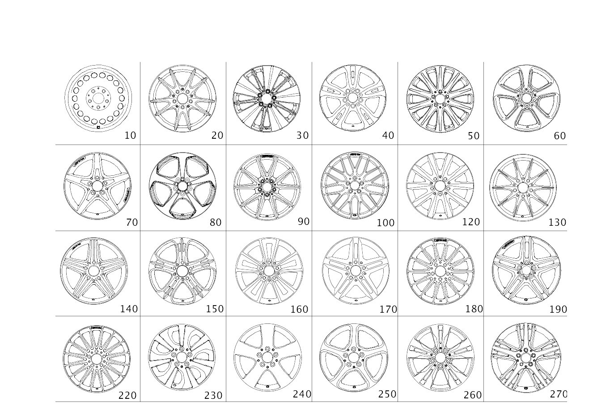

| № | Артикул | Название | Кол. | Примечание | Ограничение |
|---|---|---|---|---|---|
| 10 | A 246 400 01 02 | Дисковое колесо | 2 | СТАЛЬ.КОЛЕС.ДИСК ПЕРЕД.МОСТА; 6.5J X 16 H2 ET 49 [002869] СОБЛЮДАТЬ РУКОВОДСТВО ПО ВЫПОЛНЕНИЮ РАБОТ В WIS-NET#GF40.10-P-0804B# | 643 |
| 10 | A 246 400 01 02 | Дисковое колесо | 2 | СТАЛЬН. КОЛЕСН. ДИСК ЗАДН. МОСТА; 6.5J X 16 H2 ET 49 [002869] СОБЛЮДАТЬ РУКОВОДСТВО ПО ВЫПОЛНЕНИЮ РАБОТ В WIS-NET#GF40.10-P-0804B# | 643 |
| 20 | A 246 401 13 02 | Дисковое колесо | 2 | КОЛЕСНЫЙ ДИСК С 10 СПИЦАМИ ДЛЯ ПЕРЕДНЕГО МОСТА; 6.5J X 16 H2 ET 49 [002869] СОБЛЮДАТЬ РУКОВОДСТВО ПО ВЫПОЛНЕНИЮ РАБОТ В WIS-NET#GF40.10-P-0804B# | 39R |
| 20 | A 246 401 13 02 | Дисковое колесо | 2 | КОЛЕСНЫЙ ДИСК С 10 СПИЦАМИ ДЛЯ ЗАДНЕГО МОСТА; 6.5J X 16 H2 ET 49 [002869] СОБЛЮДАТЬ РУКОВОДСТВО ПО ВЫПОЛНЕНИЮ РАБОТ В WIS-NET#GF40.10-P-0804B# | 39R |
| 30 | A 246 401 18 00 | Дисковое колесо | 2 | МНОГОСПИЦ.ДИСК ПЕРЕД.МОСТА; 7,5JX18H2 ET52 [002869] СОБЛЮДАТЬ РУКОВОДСТВО ПО ВЫПОЛНЕНИЮ РАБОТ В WIS-NET#GF40.10-P-0804B# | 05R |
| 30 | A 246 401 18 00 | Дисковое колесо | 2 | МНОГОСПИЦ.КОЛЕСН.ДИСК ЗАД.МОСТА; 7,5JX18H2 ET52 [002869] СОБЛЮДАТЬ РУКОВОДСТВО ПО ВЫПОЛНЕНИЮ РАБОТ В WIS-NET#GF40.10-P-0804B# | 05R |
| 30 | A 246 401 18 00 | Дисковое колесо | 2 | МНОГОСПИЦ.ДИСК ПЕРЕД.МОСТА; 7,5JX18H2 ET52 [002869] СОБЛЮДАТЬ РУКОВОДСТВО ПО ВЫПОЛНЕНИЮ РАБОТ В WIS-NET#GF40.10-P-0804B# | 499E |
| 30 | A 246 401 22 00 | Дисковое колесо | 2 | МНОГОСПИЦ.ДИСК ПЕРЕД.МОСТА; 7,5JX18H2ET52 | 499E |
| 40 | A 246 401 00 00 | Дисковое колесо | 2 | КОЛЕСНЫЙ ДИСК С 5 СПИЦАМИ ДЛЯ ПЕРЕДНЕГО МОСТА; 6.5J X 16 H2 ET 49 [002869] СОБЛЮДАТЬ РУКОВОДСТВО ПО ВЫПОЛНЕНИЮ РАБОТ В WIS-NET#GF40.10-P-0804B# | R78 |
| 40 | A 246 401 00 00 | Дисковое колесо | 2 | КОЛЕСНЫЙ ДИСК С 5 СПИЦАМИ ДЛЯ ЗАДНЕГО МОСТА; 6.5J X 16 H2 ET 49 [002869] СОБЛЮДАТЬ РУКОВОДСТВО ПО ВЫПОЛНЕНИЮ РАБОТ В WIS-NET#GF40.10-P-0804B# | R78 |
| 50 | A 246 401 17 00 | Дисковое колесо | 2 | КОЛЕСНЫЙ ДИСК С 10 СПИЦАМИ ДЛЯ ПЕРЕДНЕГО МОСТА; 7,5JX18H2 ET52 [002869] СОБЛЮДАТЬ РУКОВОДСТВО ПО ВЫПОЛНЕНИЮ РАБОТ В WIS-NET#GF40.10-P-0804B# | 51R |
| 50 | A 246 401 17 00 | Дисковое колесо | 2 | КОЛЕСНЫЙ ДИСК С 10 СПИЦАМИ ДЛЯ ЗАДНЕГО МОСТА; 7,5JX18H2 ET52 [002869] СОБЛЮДАТЬ РУКОВОДСТВО ПО ВЫПОЛНЕНИЮ РАБОТ В WIS-NET#GF40.10-P-0804B# | 51R |
| 50 | A 246 401 17 00 | Дисковое колесо | 2 | КОЛЕСНЫЙ ДИСК С 10 СПИЦАМИ ДЛЯ ПЕРЕДНЕГО МОСТА; 7,5JX18H2 ET52 [002869] СОБЛЮДАТЬ РУКОВОДСТВО ПО ВЫПОЛНЕНИЮ РАБОТ В WIS-NET#GF40.10-P-0804B# | 499E |
| 50 | A 246 401 17 00 | Дисковое колесо | 2 | КОЛЕСНЫЙ ДИСК С 10 СПИЦАМИ ДЛЯ ЗАДНЕГО МОСТА; 7,5JX18H2 ET52 [002869] СОБЛЮДАТЬ РУКОВОДСТВО ПО ВЫПОЛНЕНИЮ РАБОТ В WIS-NET#GF40.10-P-0804B# | 499E |
| 50 | A 246 401 22 00 | Дисковое колесо | 2 | КОЛЕСНЫЙ ДИСК С 5 ДВОЙНЫМИ СПИЦАМИ; 7,5JX18H2ET52 | 499E |
| 60 | A 246 401 15 00 | Дисковое колесо | 2 | КОЛЕСНЫЙ ДИСК С 5 СПИЦАМИ ДЛЯ ПЕРЕДНЕГО МОСТА; 7,5JX17H2 ET 52,5 [002869] СОБЛЮДАТЬ РУКОВОДСТВО ПО ВЫПОЛНЕНИЮ РАБОТ В WIS-NET#GF40.10-P-0804B# | 499E |
| 60 | A 246 401 15 00 | Дисковое колесо | 2 | КОЛЕСНЫЙ ДИСК С 5 СПИЦАМИ ДЛЯ ЗАДНЕГО МОСТА; 7,5JX17H2 ET 52,5 [002869] СОБЛЮДАТЬ РУКОВОДСТВО ПО ВЫПОЛНЕНИЮ РАБОТ В WIS-NET#GF40.10-P-0804B# | 499E |
| 70 | A 176 401 02 02 | Колесо со спицами | 2 | КОЛЕСНЫЙ ДИСК С 5 СПИЦАМИ ДЛЯ ЗАДНЕГО МОСТА; 7.5J X 17 H2 ET 52.5 [002869] СОБЛЮДАТЬ РУКОВОДСТВО ПО ВЫПОЛНЕНИЮ РАБОТ В WIS-NET#GF40.10-P-0804B# | 768 |
| 80 | A 246 401 11 00 | Дисковое колесо | 2 | КОЛЕСНЫЙ ДИСК С 5 СПИЦАМИ ДЛЯ ПЕРЕДНЕГО МОСТА; 7,5JX18H2 ET52 [002869] СОБЛЮДАТЬ РУКОВОДСТВО ПО ВЫПОЛНЕНИЮ РАБОТ В WIS-NET#GF40.10-P-0804B# | 499E |
| 80 | A 246 401 11 00 | Дисковое колесо | 2 | КОЛЕСНЫЙ ДИСК С 5 СПИЦАМИ ДЛЯ ЗАДНЕГО МОСТА; 7,5JX18H2 ET52 [002869] СОБЛЮДАТЬ РУКОВОДСТВО ПО ВЫПОЛНЕНИЮ РАБОТ В WIS-NET#GF40.10-P-0804B# | 499E |
| 90 | A 176 401 08 00 | Колесо со спицами | 2 | КОЛЕСНЫЙ ДИСК С 10 СПИЦАМИ ДЛЯ ПЕРЕДНЕГО МОСТА; 8J X 18 H2 ET 48 [002869] СОБЛЮДАТЬ РУКОВОДСТВО ПО ВЫПОЛНЕНИЮ РАБОТ В WIS-NET#GF40.10-P-0804B# | 756 |
| 90 | A 176 401 08 00 | Колесо со спицами | 2 | КОЛЕСНЫЙ ДИСК С 10 СПИЦАМИ ДЛЯ ЗАДНЕГО МОСТА; 8J X 18 H2 ET 48 [002869] СОБЛЮДАТЬ РУКОВОДСТВО ПО ВЫПОЛНЕНИЮ РАБОТ В WIS-NET#GF40.10-P-0804B# | 756 |
| 100 | A 176 401 09 00 | Колесо со спицами | 2 | КОЛЕСНЫЙ ДИСК С ДВОЙНЫМИ СПИЦАМИ С 9 ОТВЕРСТИЯМИ ДЛЯ ПЕРЕДНЕГО МОСТА; 8J X 19 H2 ET 48 [002869] СОБЛЮДАТЬ РУКОВОДСТВО ПО ВЫПОЛНЕНИЮ РАБОТ В WIS-NET#GF40.10-P-0804B# | 638/99R/RVK/RTF |
| 100 | A 176 401 09 00 | Колесо со спицами | 2 | КОЛЕСНЫЙ ДИСК С 9 ДВОЙНЫМИ СПИЦАМИ ДЛЯ ЗАДНЕГО МОСТА; 8J X 19 H2 ET 48 [002869] СОБЛЮДАТЬ РУКОВОДСТВО ПО ВЫПОЛНЕНИЮ РАБОТ В WIS-NET#GF40.10-P-0804B# | 638/99R/RVK/RTF |
| 120 | A 246 401 01 02 | Дисковое колесо | 2 | КОЛЕСНЫЙ ДИСК С 10 СПИЦАМИ ДЛЯ ПЕРЕДНЕГО МОСТА; 6.5J X 17 H2 ET 49 [002869] СОБЛЮДАТЬ РУКОВОДСТВО ПО ВЫПОЛНЕНИЮ РАБОТ В WIS-NET#GF40.10-P-0804B# | 25R |
| 120 | A 246 401 01 02 | Дисковое колесо | 2 | КОЛЕСНЫЙ ДИСК С 10 СПИЦАМИ ДЛЯ ЗАДНЕГО МОСТА; 6.5J X 17 H2 ET 49 [002869] СОБЛЮДАТЬ РУКОВОДСТВО ПО ВЫПОЛНЕНИЮ РАБОТ В WIS-NET#GF40.10-P-0804B# | 25R |
| 130 | A 246 401 00 02 | Дисковое колесо | 2 | КОЛЕСНЫЙ ДИСК С 10 СПИЦАМИ ДЛЯ ПЕРЕДНЕГО МОСТА; 7.5J X 17 H2 ET 52.5 [002869] СОБЛЮДАТЬ РУКОВОДСТВО ПО ВЫПОЛНЕНИЮ РАБОТ В WIS-NET#GF40.10-P-0804B# | R43 |
| 130 | A 246 401 00 02 | Дисковое колесо | 2 | КОЛЕСНЫЙ ДИСК С 10 СПИЦАМИ ДЛЯ ЗАДНЕГО МОСТА; 7.5J X 17 H2 ET 52.5 [002869] СОБЛЮДАТЬ РУКОВОДСТВО ПО ВЫПОЛНЕНИЮ РАБОТ В WIS-NET#GF40.10-P-0804B# | R43 |
| 140 | A 176 401 04 02 | Колесо со спицами | 2 | КОЛЕСНЫЙ ДИСК С 5 СПИЦАМИ ДЛЯ ПЕРЕДНЕГО МОСТА; 8,0J X 18H2 ET48 [002869] СОБЛЮДАТЬ РУКОВОДСТВО ПО ВЫПОЛНЕНИЮ РАБОТ В WIS-NET#GF40.10-P-0804B# | 774 |
| 140 | A 176 401 04 02 | Колесо со спицами | 2 | КОЛЕСНЫЙ ДИСК С 5 СПИЦАМИ ДЛЯ ЗАДНЕГО МОСТА; 8,0J X 18H2 ET48 [002869] СОБЛЮДАТЬ РУКОВОДСТВО ПО ВЫПОЛНЕНИЮ РАБОТ В WIS-NET#GF40.10-P-0804B# | 774 |
| 150 | A 246 401 22 02 | Дисковое колесо | 2 | КОЛЕСО ПЕРЕДНЕГО МОСТА С 5\-Ю ТРОЙНЫМИ СПИЦАМИ; 7.5J X 18 H2 ET 52 [002869] СОБЛЮДАТЬ РУКОВОДСТВО ПО ВЫПОЛНЕНИЮ РАБОТ В WIS-NET#GF40.10-P-0804B# | 64R |
| 150 | A 246 401 22 02 | Дисковое колесо | 2 | КОЛЕСО ЗАДНЕГО МОСТА С 5\-Ю ТРОЙНЫМИ СПИЦАМИ; 7.5J X 18 H2 ET 52 [002869] СОБЛЮДАТЬ РУКОВОДСТВО ПО ВЫПОЛНЕНИЮ РАБОТ В WIS-NET#GF40.10-P-0804B# | 64R |
| 160 | A 246 401 16 02 | Дисковое колесо | 2 | КОЛЕСНЫЙ ДИСК С ДВОЙНЫМИ СПИЦАМИ С 5 ОТВЕРСТИЯМИ ДЛЯ ПЕРЕДНЕГО МОСТА; 7.5J X 18 H2 ET 52 [002869] СОБЛЮДАТЬ РУКОВОДСТВО ПО ВЫПОЛНЕНИЮ РАБОТ В WIS-NET#GF40.10-P-0804B# | 01R |
| 160 | A 246 401 16 02 | Дисковое колесо | 2 | КОЛЕСНЫЙ ДИСК С 5 ДВОЙНЫМИ СПИЦАМИ ДЛЯ ЗАДНЕГО МОСТА; 7.5J X 18 H2 ET 52 [002869] СОБЛЮДАТЬ РУКОВОДСТВО ПО ВЫПОЛНЕНИЮ РАБОТ В WIS-NET#GF40.10-P-0804B# | 01R |
| 170 | A 176 401 00 00 | Колесо со спицами | 2 | КОЛЕСНЫЙ ДИСК С ДВОЙНЫМИ СПИЦАМИ С 5 ОТВЕРСТИЯМИ ДЛЯ ПЕРЕДНЕГО МОСТА; 8J X 18 H2 ET 48 [002869] СОБЛЮДАТЬ РУКОВОДСТВО ПО ВЫПОЛНЕНИЮ РАБОТ В WIS-NET#GF40.10-P-0804B# | 637/649 |
| 170 | A 176 401 00 00 | Колесо со спицами | 2 | КОЛЕСНЫЙ ДИСК С 5 ДВОЙНЫМИ СПИЦАМИ ДЛЯ ЗАДНЕГО МОСТА; 8J X 18 H2 ET 48 [002869] СОБЛЮДАТЬ РУКОВОДСТВО ПО ВЫПОЛНЕНИЮ РАБОТ В WIS-NET#GF40.10-P-0804B# | 637/649 |
| 180 | A 176 401 02 00 | Колесо со спицами | 2 | КОЛЕСНЫЙ ДИСК С 14 СПИЦАМИ ДЛЯ ПЕРЕДНЕГО МОСТА; 7,5J X 18 H2 ET 52 [002869] СОБЛЮДАТЬ РУКОВОДСТВО ПО ВЫПОЛНЕНИЮ РАБОТ В WIS-NET#GF40.10-P-0804B# | 633/646/760/791/796/RUT/RUU/RUX |
| 180 | A 176 401 02 00 | Колесо со спицами | 2 | КОЛЕСНЫЙ ДИСК С 14 СПИЦАМИ ДЛЯ ЗАДНЕГО МОСТА; 7,5J X 18 H2 ET 52 [002869] СОБЛЮДАТЬ РУКОВОДСТВО ПО ВЫПОЛНЕНИЮ РАБОТ В WIS-NET#GF40.10-P-0804B# | 633/646/791/RUT/RUU/RUX |
| 180 | A 176 401 10 00 | Колесо со спицами | 2 | КОЛЕСНЫЙ ДИСК С 14 СПИЦАМИ ДЛЯ ЗАДНЕГО МОСТА; 8J X 18 H2 ET 50,5 [002869] СОБЛЮДАТЬ РУКОВОДСТВО ПО ВЫПОЛНЕНИЮ РАБОТ В WIS-NET#GF40.10-P-0804B# | 760/796 |
| 190 | A 176 401 03 02 | Колесо со спицами | 2 | КОЛЕСНЫЙ ДИСК С ДВОЙНЫМИ СПИЦАМИ С 5 ОТВЕРСТИЯМИ ДЛЯ ПЕРЕДНЕГО МОСТА; 7.5J X 18 H2 ET 52 [002869] СОБЛЮДАТЬ РУКОВОДСТВО ПО ВЫПОЛНЕНИЮ РАБОТ В WIS-NET#GF40.10-P-0804B# | 781/794 |
| 190 | A 176 401 03 02 | Колесо со спицами | 2 | КОЛЕСНЫЙ ДИСК С 5 ДВОЙНЫМИ СПИЦАМИ ДЛЯ ЗАДНЕГО МОСТА; 7.5J X 18 H2 ET 52 [002869] СОБЛЮДАТЬ РУКОВОДСТВО ПО ВЫПОЛНЕНИЮ РАБОТ В WIS-NET#GF40.10-P-0804B# | 781/794 |
| 190 | A 176 401 07 00 | Колесо со спицами | 2 | КОЛЕСНЫЙ ДИСК С ДВОЙНЫМИ СПИЦАМИ С 5 ОТВЕРСТИЯМИ ДЛЯ ПЕРЕДНЕГО МОСТА; 7,5J X 18 H2 ET 52 [002869] СОБЛЮДАТЬ РУКОВОДСТВО ПО ВЫПОЛНЕНИЮ РАБОТ В WIS-NET#GF40.10-P-0804B# | 612/678 |
| 190 | A 176 401 07 00 | Колесо со спицами | 2 | КОЛЕСНЫЙ ДИСК С 5 ДВОЙНЫМИ СПИЦАМИ ДЛЯ ЗАДНЕГО МОСТА; 7,5J X 18 H2 ET 52 [002869] СОБЛЮДАТЬ РУКОВОДСТВО ПО ВЫПОЛНЕНИЮ РАБОТ В WIS-NET#GF40.10-P-0804B# | 612/678 |
| 220 | A 176 401 05 02 | Колесо со спицами | 2 | КОЛЕСНЫЙ ДИСК С 16 СПИЦАМИ ДЛЯ ПЕРЕДНЕГО МОСТА; 8.0J X 19 H2 ET 48 [002869] СОБЛЮДАТЬ РУКОВОДСТВО ПО ВЫПОЛНЕНИЮ РАБОТ В WIS-NET#GF40.10-P-0804B# | 635/693/694/780/787/RRG/RVG |
| 220 | A 176 401 05 02 | Колесо со спицами | 2 | КОЛЕСНЫЙ ДИСК С 16 СПИЦАМИ ДЛЯ ЗАДНЕГО МОСТА; 8.0J X 19 H2 ET 48 [002869] СОБЛЮДАТЬ РУКОВОДСТВО ПО ВЫПОЛНЕНИЮ РАБОТ В WIS-NET#GF40.10-P-0804B# | 635/693/694/780/787/RRG/RVG |
| 230 | A 246 401 17 02 | Дисковое колесо | 2 | КОЛЕСНЫЙ ДИСК С 7 ОТВЕРСТИЯМИ ДЛЯ ПЕРЕДНЕГО МОСТА; 6.5J X 16 H2 ET 49 [002869] СОБЛЮДАТЬ РУКОВОДСТВО ПО ВЫПОЛНЕНИЮ РАБОТ В WIS-NET#GF40.10-P-0804B# | R20 |
| 230 | A 246 401 17 02 | Дисковое колесо | 2 | КОЛЕСНЫЙ ДИСК С 7 ОТВЕРСТИЯМИ ДЛЯ ЗАДНЕГО МОСТА; 6.5J X 16 H2 ET 49 [002869] СОБЛЮДАТЬ РУКОВОДСТВО ПО ВЫПОЛНЕНИЮ РАБОТ В WIS-NET#GF40.10-P-0804B# | R20 |
| 240 | A 246 401 03 00 | Дисковое колесо | 2 | КОЛЕСНЫЙ ДИСК С 5 ОТВЕРСТИЯМИ ДЛЯ ПЕРЕДНЕГО МОСТА; 7.5J X 17 H2 ET 52.5 [002869] СОБЛЮДАТЬ РУКОВОДСТВО ПО ВЫПОЛНЕНИЮ РАБОТ В WIS-NET#GF40.10-P-0804B# | R24 |
| 240 | A 246 401 03 00 | Дисковое колесо | 2 | КОЛЕСНЫЙ ДИСК С 5 ОТВЕРСТИЯМИ ДЛЯ ЗАДНЕГО МОСТА; 7.5J X 17 H2 ET 52.5 [002869] СОБЛЮДАТЬ РУКОВОДСТВО ПО ВЫПОЛНЕНИЮ РАБОТ В WIS-NET#GF40.10-P-0804B# | R24 |
| 240 | A 246 401 03 00 | Дисковое колесо | 2 | КОЛЕСНЫЙ ДИСК С 5 ОТВЕРСТИЯМИ ДЛЯ ПЕРЕДНЕГО МОСТА; 7.5J X 17 H2 ET 52.5 [002869] СОБЛЮДАТЬ РУКОВОДСТВО ПО ВЫПОЛНЕНИЮ РАБОТ В WIS-NET#GF40.10-P-0804B# | R24+(494/775L) |
| 240 | A 246 401 03 00 | Дисковое колесо | 2 | КОЛЕСНЫЙ ДИСК С 5 ОТВЕРСТИЯМИ ДЛЯ ЗАДНЕГО МОСТА; 7.5J X 17 H2 ET 52.5 [002869] СОБЛЮДАТЬ РУКОВОДСТВО ПО ВЫПОЛНЕНИЮ РАБОТ В WIS-NET#GF40.10-P-0804B# | R24+(494/775L) |
| 250 | A 246 401 19 02 | Дисковое колесо | 2 | КОЛЕСНЫЙ ДИСК С 5 ОТВЕРСТИЯМИ ДЛЯ ПЕРЕДНЕГО МОСТА; 7.5J X 17 H2 ET 52.5 [002869] СОБЛЮДАТЬ РУКОВОДСТВО ПО ВЫПОЛНЕНИЮ РАБОТ В WIS-NET#GF40.10-P-0804B# | 02R |
| 250 | A 246 401 19 02 | Дисковое колесо | 2 | КОЛЕСНЫЙ ДИСК С 5 ОТВЕРСТИЯМИ ДЛЯ ЗАДНЕГО МОСТА; 7.5J X 17 H2 ET 52.5 [002869] СОБЛЮДАТЬ РУКОВОДСТВО ПО ВЫПОЛНЕНИЮ РАБОТ В WIS-NET#GF40.10-P-0804B# | 02R |
| 260 | A 246 401 04 00 | Дисковое колесо | 2 | КОЛЕСНЫЙ ДИСК С ДВОЙНЫМИ СПИЦАМИ С 5 ОТВЕРСТИЯМИ ДЛЯ ПЕРЕДНЕГО МОСТА; 7.5J X 18 H2 ET 52 [002869] СОБЛЮДАТЬ РУКОВОДСТВО ПО ВЫПОЛНЕНИЮ РАБОТ В WIS-NET#GF40.10-P-0804B# | R31/66R |
| 260 | A 246 401 04 00 | Дисковое колесо | 2 | КОЛЕСНЫЙ ДИСК С 5 ДВОЙНЫМИ СПИЦАМИ ДЛЯ ЗАДНЕГО МОСТА; 7.5J X 18 H2 ET 52 [002869] СОБЛЮДАТЬ РУКОВОДСТВО ПО ВЫПОЛНЕНИЮ РАБОТ В WIS-NET#GF40.10-P-0804B# | R31/66R |
| 260 | A 246 401 04 00 | Дисковое колесо | 2 | КОЛЕСНЫЙ ДИСК С ДВОЙНЫМИ СПИЦАМИ С 5 ОТВЕРСТИЯМИ ДЛЯ ПЕРЕДНЕГО МОСТА; 7.5J X 18 H2 ET 52 [002869] СОБЛЮДАТЬ РУКОВОДСТВО ПО ВЫПОЛНЕНИЮ РАБОТ В WIS-NET#GF40.10-P-0804B# | R31+775L |
| 260 | A 246 401 04 00 | Дисковое колесо | 2 | КОЛЕСНЫЙ ДИСК С 5 ДВОЙНЫМИ СПИЦАМИ ДЛЯ ЗАДНЕГО МОСТА; 7.5J X 18 H2 ET 52 [002869] СОБЛЮДАТЬ РУКОВОДСТВО ПО ВЫПОЛНЕНИЮ РАБОТ В WIS-NET#GF40.10-P-0804B# | R31+775L |
| 260 | A 246 401 16 02 | Дисковое колесо | 2 | КОЛЕСНЫЙ ДИСК С ДВОЙНЫМИ СПИЦАМИ С 5 ОТВЕРСТИЯМИ ДЛЯ ПЕРЕДНЕГО МОСТА; 7.5J X 18 H2 ET 52 [002869] СОБЛЮДАТЬ РУКОВОДСТВО ПО ВЫПОЛНЕНИЮ РАБОТ В WIS-NET#GF40.10-P-0804B# | R70 |
| 260 | A 246 401 10 00 | Дисковое колесо | 2 | КОЛЕСНЫЙ ДИСК С 5 ДВОЙНЫМИ СПИЦАМИ ДЛЯ ЗАДНЕГО МОСТА; 8J X 18 H2 ET 50.5 [002869] СОБЛЮДАТЬ РУКОВОДСТВО ПО ВЫПОЛНЕНИЮ РАБОТ В WIS-NET#GF40.10-P-0804B# | R70 |
| 270 | A 246 401 20 02 | Дисковое колесо | 2 | КОЛЕСО ПЕРЕДНЕГО МОСТА С 5\-Ю ТРОЙНЫМИ СПИЦАМИ; 7.5J X 18 H2 ET 52 [002869] СОБЛЮДАТЬ РУКОВОДСТВО ПО ВЫПОЛНЕНИЮ РАБОТ В WIS-NET#GF40.10-P-0804B# | 46R |
| 270 | A 246 401 20 02 | Дисковое колесо | 2 | КОЛЕСО ЗАДНЕГО МОСТА С 5\-Ю ТРОЙНЫМИ СПИЦАМИ; 7.5J X 18 H2 ET 52 [002869] СОБЛЮДАТЬ РУКОВОДСТВО ПО ВЫПОЛНЕНИЮ РАБОТ В WIS-NET#GF40.10-P-0804B# | 46R |
| 400 | A 246 400 26 00 | Колесо | 1 | ЗАПАСНОЕ КОЛЕСО | E76 |
| 450 | A 019 401 20 10 | Шина | 2 | СПЕРЕДИ И СЗАДИ 205/55 R 16 91V EXTENDED | R01+V22+R66+(R20/39R/643/R78) |
| 450 | A 019 401 20 10 | Шина | 2 | СПЕРЕДИ И СЗАДИ 205/55 R 16 91V EXTENDED | R01+V22+R66+(R20/39R/643/R78) |
| 450 | A 020 401 68 10 | Шина | 2 | СПЕРЕДИ И СЗАДИ 225/40 R 18 92W XL EXTENDED | R01+V80+R66+(633/646/781/794/791) |
| 450 | A 020 401 68 10 | Шина | 2 | СПЕРЕДИ И СЗАДИ 225/40 R 18 92W XL EXTENDED | R01+V80+R66+(633/646/781/794/791) |
| 450 | A 018 401 71 10 | Шина | 2 | СПЕРЕДИ И СЗАДИ 225/45 R 17 91W EXTENDED | R01+V50+R66+(02R/R24/R43) |
| 450 | A 018 401 71 10 | Шина | 2 | СПЕРЕДИ И СЗАДИ 225/45 R 17 91W EXTENDED | R01+V50+R66+(02R/R24/R43) |
| 450 | A 020 401 68 10 | Шина | 2 | СПЕРЕДИ И СЗАДИ 225/40 R 18 92W EXTENDED | R01+V80+R66+(01R/05R/R31/46R/51R/64R/66R) |
| 450 | A 020 401 68 10 | Шина | 2 | СПЕРЕДИ И СЗАДИ 225/40 R 18 92W EXTENDED | R01+V80+R66+(01R/05R/R31/46R/51R/64R/66R) |
| 450 | A 018 401 71 10 | Шина | 2 | СПЕРЕДИ И СЗАДИ 225/45 R 17 91W EXTENDED | R01+V50+R66+768 |
| 450 | A 000 401 21 08 | Шина | 2 | СПЕРЕДИ И СЗАДИ 225/40 R18 92H XL ALL\-SEASON EXTENDED | R02+0V8+R66+(612/633/646/678/794/791/RUT/RUU/RUX) |
| 450 | A 018 401 71 10 | Шина | 2 | СПЕРЕДИ И СЗАДИ 225/45 R 17 91W EXTENDED | R01+V50+R66+768 |
| 450 | A 000 401 21 08 | Шина | 2 | СПЕРЕДИ И СЗАДИ 225/40 R18 92H XL ALL\-SEASON EXTENDED | R02+0V8+R66+(612/633/646/678/794/791/RUT/RUU/RUX) |
| 450 | A 020 401 68 10 | Шина | 2 | СПЕРЕДИ И СЗАДИ 225/40 R 18 92W EXTENDED | R01+V80+R66+(612/633/646/678/781/794/791/RUT/RUU/RUX) |
| 450 | A 020 401 68 10 | Шина | 2 | СПЕРЕДИ И СЗАДИ 225/40 R 18 92W EXTENDED | R01+V80+R66+(612/633/646/678/781/794/791/RUT/RUU/RUX) |
| 450 | A 014 401 17 10 | Шина | 1 | ЗАПАСНОЕ КОЛЕСО; T125 80 R17 99M [402] БОЛЬШЕ НЕ ПОСТАВЛЯЕТСЯ | E76 |
| 460 | A 000 400 29 13 | - Вентиль шины | 1 | Запасное колесо | E76 |
| 510 | A 246 400 01 25 | Колпак колесного диска | 4 | ПЕРЕДНИЙ И ЗАДНИЙ МОСТ; 16" | 643 |
| 510 | A 247 400 06 00 | Колпак колеса | 4 | ПЕРЕДНИЙ И ЗАДНИЙ МОСТ | 643 |
| 520 | A 222 400 22 00 | Колпак ступицы | 4 | ПЕРЕДНИЙ И ЗАДНИЙ МОСТ | |
| 520 | A 220 400 01 25 | Крышка ступицы колеса | 4 | ПЕРЕДНИЙ И ЗАДНИЙ МОСТ | 635+498/638/649/756/780/787/99R/RVK |
| 520 | A 171 400 01 25 | Крышка ступицы колеса | 4 | ПЕРЕДНИЙ И ЗАДНИЙ МОСТ | |
| 520 | A 220 400 01 25 | Крышка ступицы колеса | 4 | ПЕРЕДНИЙ И ЗАДНИЙ МОСТ | (649+B58/694)+498 |
| 520 | A 171 400 01 25 | Крышка ступицы колеса | 4 | ПЕРЕДНИЙ И ЗАДНИЙ МОСТ | 612/637/646/678/693/756+821/760/774/781/796 |
| 520 | A 222 400 22 00 | Колпак ступицы | 4 | ПЕРЕДНИЙ И ЗАДНИЙ МОСТ | 612/637/646/678/693/756+821/760/774/781/796 |
| 520 | A 000 400 09 00 | Колпак колеса | 4 | ПЕРЕДНИЙ И ЗАДНИЙ МОСТ | 635+-498 |
| 520 | A 000 400 09 00 | Колпак колеса | 4 | ПЕРЕДНИЙ И ЗАДНИЙ МОСТ | 99R+830 |
| 530 | A 000 990 17 07 | Винт со сфер. буртиком | 20 | M14X1,5X30,7 | |
| 530 | A 000 990 83 07 | Винт со сфер. буртиком | 20 | ПЕРЕДНИЙ И ЗАДНИЙ МОСТ; M14X1,5X30,7 | -M133 |
| 550 | A 000 905 00 30 | Датчик давл. воздуха шины | 2 | СИСТЕМА КОНТРОЛЯ ДАВЛ. В ШИНАХ, ПЕРЕД. МОСТ [002832] ВНИМАНИЕ: ТАКЖЕ СЛЕДУЕТ ЗАКАЗАТЬ РИФЛЕНУЮ ГАЙКУ | 475 |
| 550 | A 000 905 00 30 | Датчик давл. воздуха шины | 2 | СИСТ. КОНТРОЛЯ ДАВЛ. В ШИНАХ, ЗАДН. МОСТ [002832] ВНИМАНИЕ: ТАКЖЕ СЛЕДУЕТ ЗАКАЗАТЬ РИФЛЕНУЮ ГАЙКУ | 475 |
| 550 | A 000 905 18 04 | Датчик давл. воздуха шины | 2 | СИСТЕМА КОНТРОЛЯ ДАВЛ. В ШИНАХ, ПЕРЕД. МОСТ [002832] ВНИМАНИЕ: ТАКЖЕ СЛЕДУЕТ ЗАКАЗАТЬ РИФЛЕНУЮ ГАЙКУ | 475+(R00/643) |
| 550 | A 000 905 18 04 | Датчик давл. воздуха шины | 2 | СИСТ. КОНТРОЛЯ ДАВЛ. В ШИНАХ, ЗАДН. МОСТ [002832] ВНИМАНИЕ: ТАКЖЕ СЛЕДУЕТ ЗАКАЗАТЬ РИФЛЕНУЮ ГАЙКУ | 475+(R00/643) |
| 555 | A 000 400 10 00 | - Вентиль шины | 2 | 475 | |
| 555 | A 000 400 06 00 | - Вентиль шины | 2 | 475+(R00/643) | |
| 555 | A 000 400 13 00 | - Вентиль шины | 2 | 475+-R00 | |
| 555 | A 000 400 14 00 | - Вентиль шины | 2 | 475+R00 | |
| 555 | A 000 400 10 00 | - Вентиль шины | 2 | 475 | |
| 555 | A 000 400 06 00 | - Вентиль шины | 2 | 475+(R00/643) | |
| 555 | A 000 400 13 00 | - Вентиль шины | 2 | 475+-R00 | |
| 555 | A 000 400 14 00 | - Вентиль шины | 2 | 475+R00 | |
| 556 | A 000 997 91 05 | - Плоское уплотнение | 2 | УПЛОТНИТЕЛЬНОЕ КОЛЬЦО КЛАПАНА ПЕРЕДНЕГО МОСТА | 475 |
| 556 | A 000 997 91 05 | - Плоское уплотнение | 2 | УПЛОТНИТЕЛЬНОЕ КОЛЬЦО КЛАПАНА ЗАДНЕГО МОСТА | 475 |
| 560 | A 000 401 59 04 | - Гайка вентиля | 2 | 475 | |
| 560 | A 000 401 59 04 | - Гайка вентиля | 2 | 475 | |
| 565 | A 000 401 06 09 | - Защитный колпачок | 4 | 475 | |
| 570 | A 000 400 02 13 | - Вентиль шины | 2 | ВЕНТИЛЬ НАКАЧ.ШИНЫ, | -475 |
| 570 | A 000 400 03 13 | - Вентиль шины | 2 | ВЕНТИЛЬ НАКАЧ.ШИНЫ, | (R00/643)+-475 |
| 570 | A 000 400 02 13 | - Вентиль шины | 2 | ВЕНТИЛЬ НАКАЧ.ШИНЫ, | -(02R/R20/R24/25R/R31/39R/R43/46R/643)+-(475) |
| 570 | A 000 400 03 13 | - Вентиль шины | 2 | ВЕНТИЛЬ НАКАЧ.ШИНЫ, | (R00/643)+-475 |
| 580 | N 007757 008600 | Колпачок вентиля | 4 | -(02R/R20/R24/25R/R31/39R/R43/46R/475) | |
| 580 | N 007757 008600 | Колпачок вентиля | 4 | (R00/643)+-475 | |
| 600 | A 171 401 01 94 | Балансировочный грузик | NB | ПРИКЛЕЕННОЕ ИСПОЛНЕНИЕ; 5 GRAMM | |
| 600 | A 171 401 02 94 | Балансировочный грузик | NB | ПРИКЛЕЕННОЕ ИСПОЛНЕНИЕ; 10 GRAMM | |
| 600 | A 171 401 03 94 | Балансировочный грузик | NB | ПРИКЛЕЕННОЕ ИСПОЛНЕНИЕ; 15 GRAMM | |
| 600 | A 171 401 04 94 | Балансировочный грузик | NB | ПРИКЛЕЕННОЕ ИСПОЛНЕНИЕ; 20 GRAMM | |
| 600 | A 171 401 05 94 | Балансировочный грузик | NB | ПРИКЛЕЕННОЕ ИСПОЛНЕНИЕ; 25 GRAMM | |
| 600 | A 171 401 06 94 | Балансировочный грузик | NB | ПРИКЛЕЕННОЕ ИСПОЛНЕНИЕ; 30 GRAMM | |
| 600 | A 171 401 07 94 | Балансировочный грузик | NB | ПРИКЛЕЕННОЕ ИСПОЛНЕНИЕ; 35 GRAMM | |
| 600 | A 171 401 08 94 | Балансировочный грузик | NB | ПРИКЛЕЕННОЕ ИСПОЛНЕНИЕ; 40 GRAMM | |
| 600 | A 171 401 09 94 | Балансировочный грузик | NB | ПРИКЛЕЕННОЕ ИСПОЛНЕНИЕ; 45 GRAMM | |
| 600 | A 171 401 10 94 | Балансировочный грузик | NB | ПРИКЛЕЕННОЕ ИСПОЛНЕНИЕ; 50 GRAMM | |
| 600 | A 171 401 11 94 | Балансировочный грузик | NB | ПРИКЛЕЕННОЕ ИСПОЛНЕНИЕ; 55 GRAMM | |
| 600 | A 171 401 12 94 | Балансировочный грузик | NB | ПРИКЛЕЕННОЕ ИСПОЛНЕНИЕ; 60 GRAMM | |
| 610 | A 126 401 08 28 | Удерживающая пружина | 2 | БАЛАНСИРОВОЧНЫЙ ГРУЗИК ДЛЯ ВНУТРЕННЕЙ СТОРОНЫ КОЛЁСНОГО ДИСКА | R00/643 |
| 610 | A 126 401 08 28 | Удерживающая пружина | 2 | БАЛАНСИРОВОЧНЫЙ ГРУЗИК ДЛЯ ВНУТРЕННЕЙ СТОРОНЫ КОЛЁСНОГО ДИСКА | R00/643 |
| 610 | A 126 401 08 28 | Удерживающая пружина | 2 | БАЛАНСИРОВОЧНЫЙ ГРУЗИК ДЛЯ НАРУЖНОЙ СТОРОНЫ КОЛЁСНОГО ДИСКА | R00/643 |
| 610 | A 126 401 08 28 | Удерживающая пружина | 2 | БАЛАНСИРОВОЧНЫЙ ГРУЗИК ДЛЯ НАРУЖНОЙ СТОРОНЫ КОЛЁСНОГО ДИСКА | R00/643 |
| 620 | A 171 401 27 94 | Балансировочный грузик | NB | 5 GRAMM | |
| 620 | A 171 401 28 94 | Балансировочный грузик | NB | 10 GRAMM | |
| 620 | A 171 401 29 94 | Балансировочный грузик | NB | 15 GRAMM | |
| 620 | A 171 401 14 94 | Балансировочный грузик | NB | 20 GRAMM | |
| 620 | A 171 401 15 94 | Балансировочный грузик | NB | 25 GRAMM | |
| 620 | A 171 401 16 94 | Балансировочный грузик | NB | 30 GRAMM | |
| 620 | A 171 401 17 94 | Балансировочный грузик | NB | 35 GRAMM | |
| 620 | A 171 401 18 94 | Балансировочный грузик | NB | 40 GRAMM | |
| 620 | A 171 401 19 94 | Балансировочный грузик | NB | 45 GRAMM | |
| 620 | A 171 401 20 94 | Балансировочный грузик | NB | 50 GRAMM | |
| 620 | A 171 401 21 94 | Балансировочный грузик | NB | 55 GRAMM | |
| 620 | A 171 401 22 94 | Балансировочный грузик | NB | 60 GRAMM | |
| 800 | A 000 905 85 04 | Датчик давл. воздуха шины | 1 | К\-Т ДЕТАЛЕЙ; СПЕРЕДИ И СЗАДИ; 433MHZ | 475 |
Позиций: 142 · подписано на схемах: 142 · колесо — плавный зум в курсор, перетаскивание — пан, двойной клик — зум, клик по артикулу — скопировать · наведите на строку или цифру на схеме — подсветка связки, клик — закрепить.